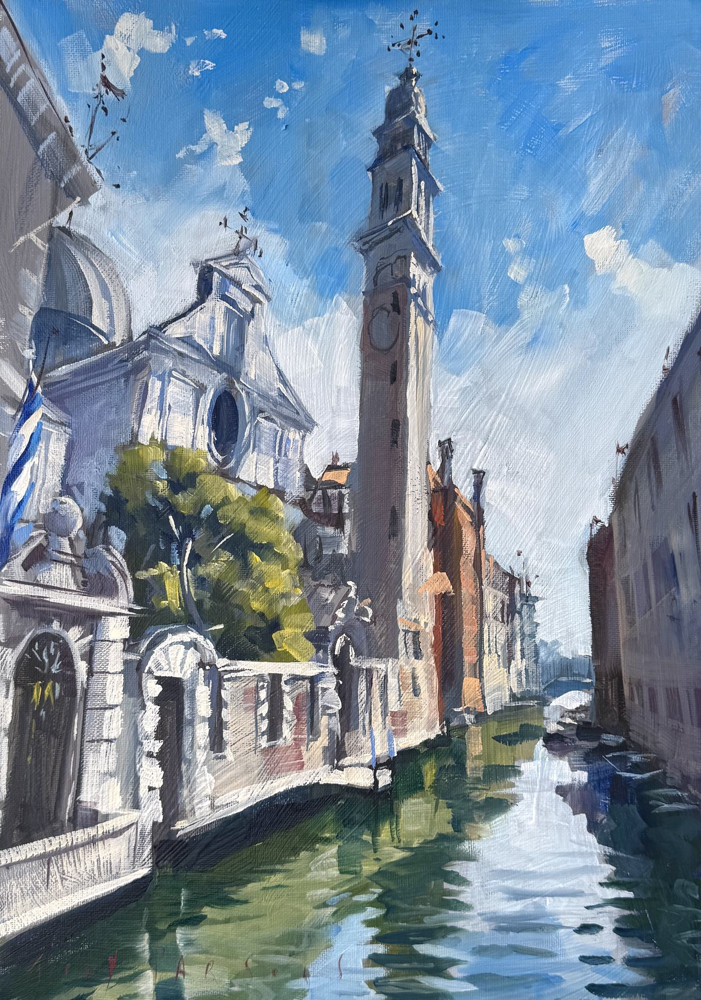

Three from Venice
Painted from the canal edges in September — a first look, before they find walls. Larger Venice work follows from the studio over the winter; these three were the scouts.

Antico Doge
42×30cm · Oil on canvas-covered boardFrom the canal edge opposite the Hotel Antico Doge, Cannaregio.

The Greek Quarter
42×30cm · Oil on canvas-covered boardPonte dei Greci, Castello.

Pointe de l’Ogio
42×30cm · Oil on canvas-covered boardThe Ponte de l’Ogio — the little ‘bridge of the oil’, two minutes from the hotel, Cannaregio.
If one of the three catches you, the wishlist button will find me — or simply reply on WhatsApp.
Tony
Tony has exhibited with the ROI and the RSMA at London’s Mall Galleries, held solo exhibitions in Cairo, the Bahamas, the Channel Islands and the Alps, and his work hangs in the private collections of British Royalty and of institutions across Europe.